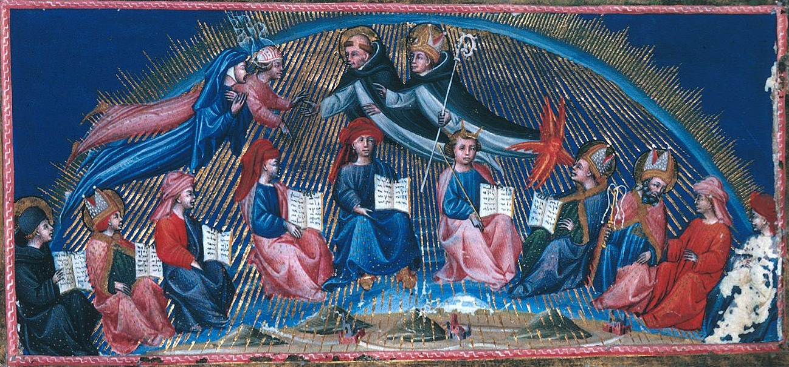

Siger of Brabant

Giovanni Di Paolo's illustration of Dante meeting the wise souls in Paradiso 10
He taught to his medieval audience that there is no Heaven or Hell. Thomas Aquinas was sent to Paris to counter his influence. He may have headed a revolt that caused the Sorbonne to split. His theses were condemned in the most important decree of his century, he was banned from teaching, and he was killed under unclear circumstances. Dante put him in Heaven, among the wise souls, together with Aquinas. And yet, he was quickly forgotten. Siger of Brabant was quite a character...
You can find more info on Siger in the Encyclopedia Britannica.